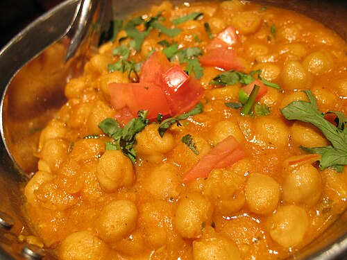
61. chole-masalaFile:Chana masala.jpg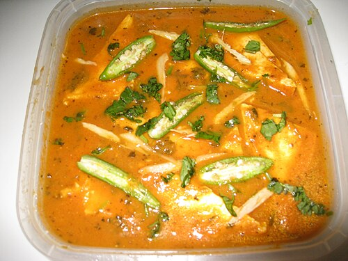
62. paneer-butter-masalaFile:Shahi panner.jpg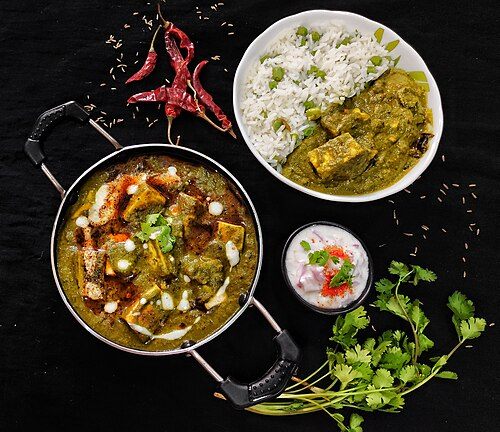
63. palak-paneerFile:Palakpaneer Rayagada Odisha 0009.jpg 64. paneer-tikkaFile:Paneer tikka.jpg
64. paneer-tikkaFile:Paneer tikka.jpg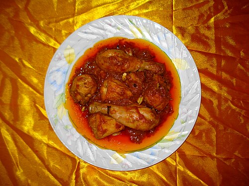
65. navratan-kormaFile:Chicken Korma.JPG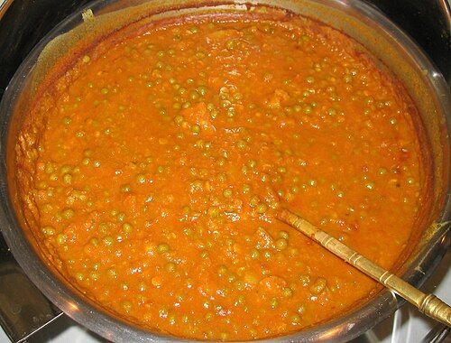
66. aloo-mutterFile:Aloo Mattar.jpg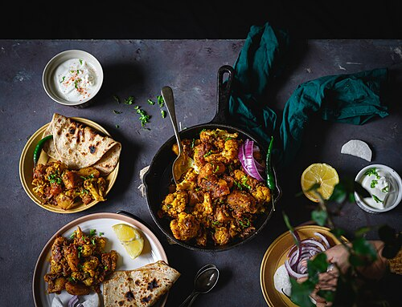
67. aloo-gobiFile:Aloo Ghobi.jpg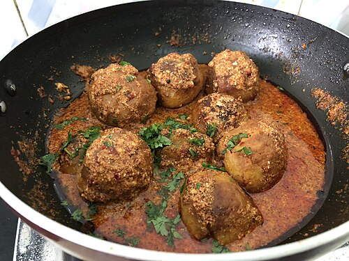
68. dum-alooFile:Kashmiri Dum aloo.jpeg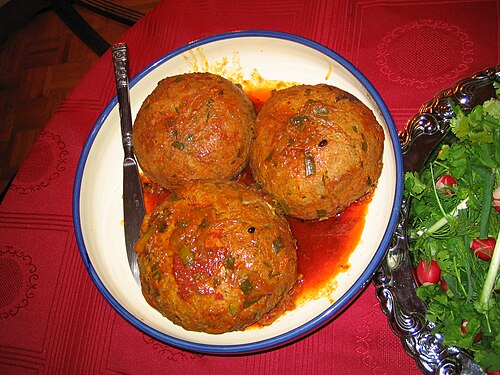
69. malai-koftaFile:Koofteh tabrizi.jpg 70. shahi-paneerFile:Shahi panner.jpg
70. shahi-paneerFile:Shahi panner.jpg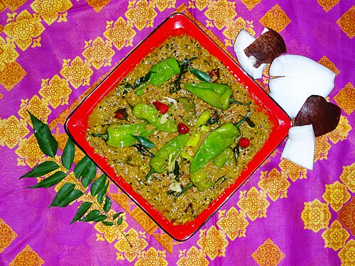
71. mirchi-salanFile:Hyderabadi Hari Mirchi Ka Salan.JPG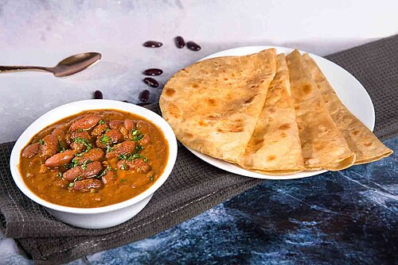
72. rajmaFile:Rajma Masala (32081557778).jpg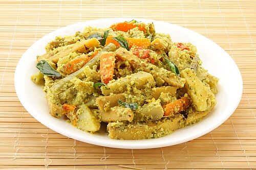
73. avialFile:Ayiyal.jpg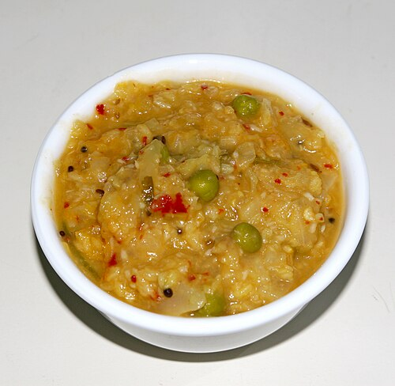
74. madras-kootuFile:Cabbage kootu.jpg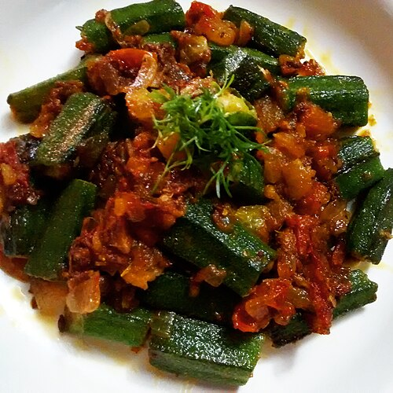
75. bhindi-fryFile:Bhindi Masala.jpg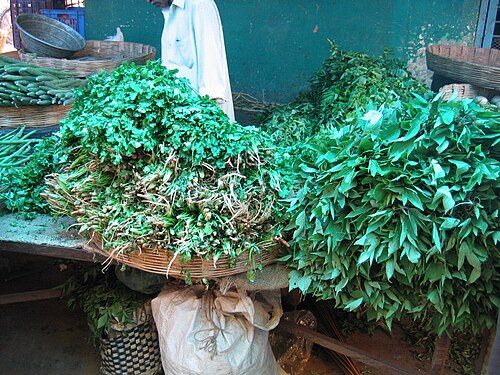
76. gongura-pappuFile:Guntur Gongura1.jpg 77. kootuFile:Cabbage kootu.jpg
77. kootuFile:Cabbage kootu.jpg 78. madras-sambarFile:Pumpkin sambar.JPG
78. madras-sambarFile:Pumpkin sambar.JPG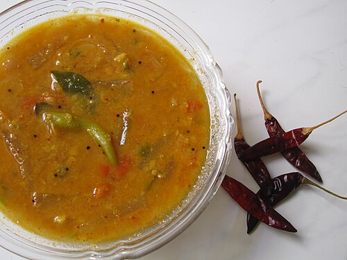
79. karnataka-sambarFile:Pumpkin sambar.JPG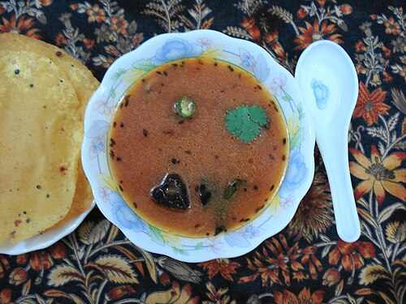
80. lemon-rasamFile:Rasam.JPG